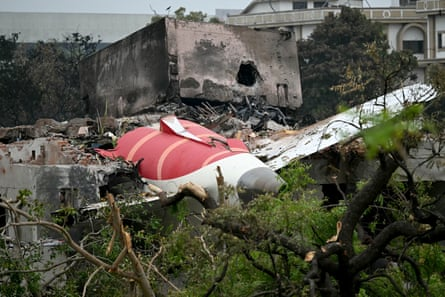

The lawyer representing families whose loved ones died in the Air India flight 171 crash has said he is “angered and appalled” by the airline’s “ethically outrageous” behaviour towards bereaved relatives.
Air India said the claims, which they take “incredibly seriously”, are “unsubstantiated and inaccurate”.
Peter Neenan, an aviation lawyer and partner at UK law firm Stewarts, has represented families in a number of large airline disasters around the world, including the high-profile MH17 and MH370 crashes.
He claimed the airline’s treatment of grief-stricken families could save it at least £100m by under-compensating families. “This is the real horror of what they’re potentially looking to do,” he said, calling for an investigation into the airline’s behaviour.
Neenan said that relatives arriving to identify their loved ones’ remains in the days after the crash on 12 July were put in a crowded, dark room in the intense heat with other bereaved families, and told to fill out documentation and a complicated questionnaire asking for important financial information.
The families were not given any warning, legal advice or a copy of the documents, he said. Some families have told him that Air India officials went round to their homes and asked why they had not yet completed the forms.
Debris of Air India flight 171 after the crash.Photograph: Punit Paranjpe/AFP/Getty Images
Neenan claimed families were falsely told they would not receive any payments unless they completed the forms, even though airlines are required under international law to make immediate advance payments to families entitled to compensation. Families are not required to do anything more than provide proof of identity and sign a receipt.
One relative, whose mother was killed in the crash, said: “The conditions where they asked us to complete the questionnaire were unacceptable, in a crowded hot corridor with unsuitable chairs and desks. There was no privacy whatsoever.
“They asked us for information about dependency but there was no specifics about what they meant by that, whether financial or otherwise. I felt pressure at the time under extremely distressing circumstances following such a catastrophic loss.
“Air India should have done this in a more professional and compassionate manner and asked all families to seek legal advice before proceeding. However, it was implied that if we did not complete the questionnaire and submit documents then no compensation would be paid.”
Air India has said they take “such accusations incredibly seriously” because the “support and welfare of the families impacted by this tragic incident is our number one priority”.
A spokesperson said the airline “sought to make the questionnaire as simple as possible to ensure compensation goes to the right person as swiftly and smoothly as possible”.
“We are doing everything we possibly can to ensure that compensation is provided as quickly and smoothly as possible to families at what is an impossibly difficult time for them,” they added.
“Understandably, there are some formal processes that must be followed but we are giving families all the time and flexibility they need and we want to support however we can.”
The spokesperson said Air India had been making “considerable efforts to process payment of interim compensation as soon as possible, in order to meet the immediate financial needs of affected family members, with the first payments having been made within days of the accident”.
To date, Air India has released interim compensation to 47 families, they said, with a further 55 payments shortly to be released.
“In order to facilitate payments, Air India has sought basic information to establish family relationships to ensure that the advance payments are received by those entitled to them. Family members have been issued with a questionnaire to allow Air India to gather the information required to process compensation payments.
“Air India has certainly not made any unsolicited visits to families’ homes.”
In addition, the spokesperson said: “Air India provided dedicated support staff to every family. These liaison officers were able to support on any number of things from accommodation, transport, funeral arrangements or any logistics.”
Family members of a victim of the Air India plane crash, grieve during a funeral procession in Ahmedabad.Photograph: Ajit Solanki/AP
But Neenan said: “The repeated story that we have heard from our clients is that families have been told by Air India that they have to complete a questionnaire to get the advance payment, forcing them to fill out this questionnaire in appalling conditions: small, crowded rooms, in intense heat with no guidance on the terms and questions within the questionnaire.
“Our clients have shown us the questionnaire. It demands legally significant information using terms which have a legal definition which is not being told to families.
“The forms say that Air India will use the information given to calculate compensation. They ask for apparently straightforward information but using terms that are actually very legally charged and contain a lot of nuance that you need legal training before being able to understand.
“There is no question that the information being asked for could be used against families by Air India in the future,” he said. “There are two scenarios that will come out of families filling out these forms: either families get lawyers like me involved afterwards, and then we have to argue in court that the relative filled out the form without understanding the terms, and hope the judge agrees with us.
“Or, which is even worse, the airline calculates compensation using information on the form, the family don’t get legal representation, and accept what I guarantee will be a significantly lower level of compensation – and that could be millions of pounds less than they are entitled to.”
“We are advising our clients not to complete this form and to seek specialist legal advice,” he added. “We are shocked and appalled that Air India is seeking this information from families when they are at their most vulnerable. They should feel ashamed.”